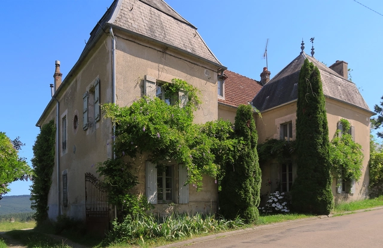
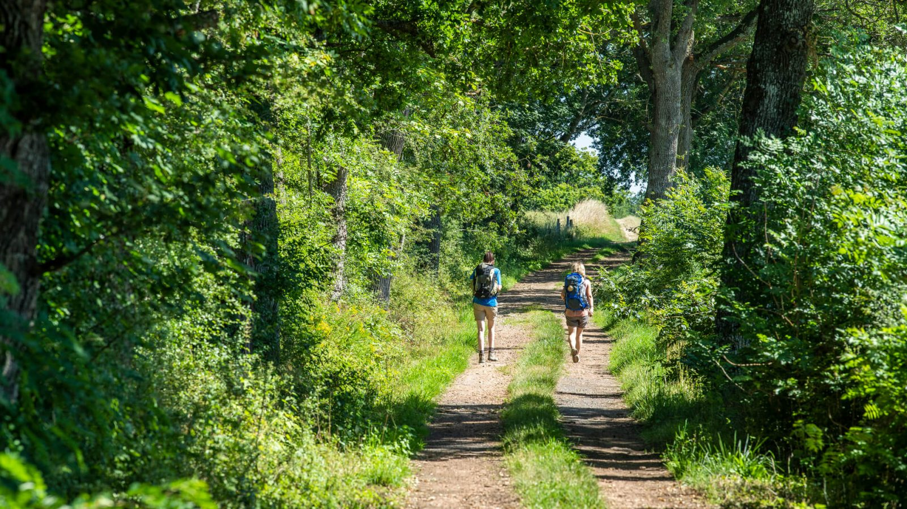
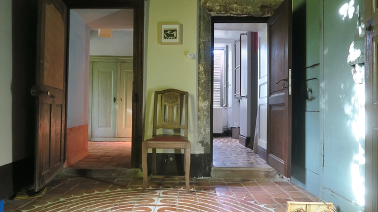
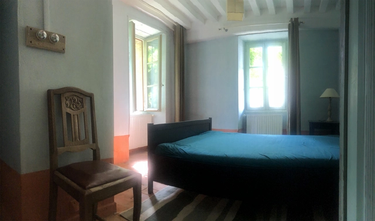
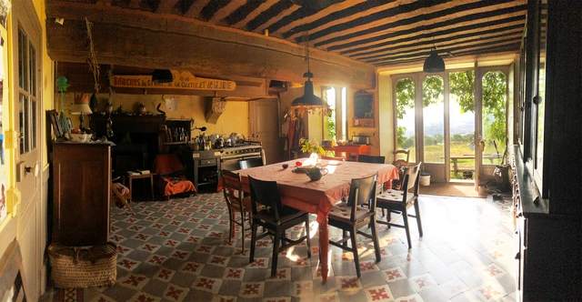
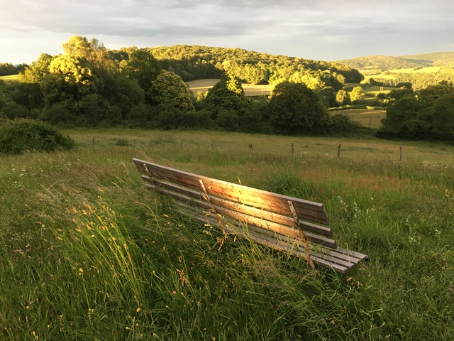

Bienvenue "Chez Sophie", votre étape chaleureuse au cœur du Morvan.
Idéalement situé sur les grands chemins de randonnée et de pèlerinage, notre hébergement vous offre un havre de paix pour vous ressourcer au sein d'une nature préservée.


Le GR13, le GR de Pays Tour du Morvan, le Chemin de Compostelle et le Chemin d'Assise passent par Marigny l'Église.
Tarif de la chambre d'hôtes
Nous vous accueillons pour une nuit dans une chambre préparée (draps et couette) avec une salle de bain partagée : 30€ la nuitée par personne, petit-déjeuner compris.
Nous pouvons vous proposer un diner (18€) ainsi qu'un pique-nique (10€) ou vous pouvez préparer votre repas dans une cuisine partagée
Vous pourrez profiter d'un grand jardin avec vue sur la vallée
Gare la plus proche : Avallon à 20 km
Galerie photos




Réserver votre nuit
Vous pouvez réserver par mail à l'adresse chezsophiedemarigny@gmail.com ou par téléphone au 06 99 07 75 31